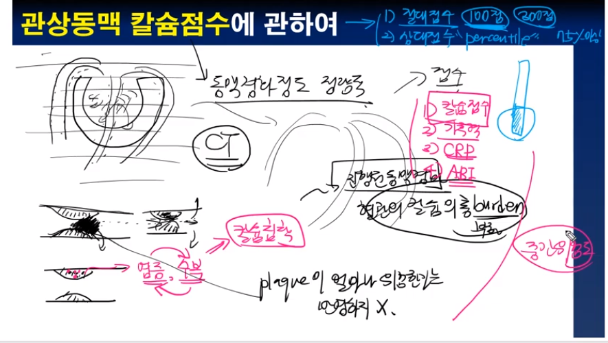

기역과 함께하는 깊이있는 의학공부
동맥경화, 어느 혈관에 잘생길까 youtube
혈관내의 플라크가 심장을 무너뜨린다 - 에드워드 제너의 편지 youtube
협심증의 증세 - 12가지 표현 youtube

협심증, 심근경색, 관상동맥질환, 허혈성심장병... 이게 다 뭔가요 youtube

고혈압을 치료해야 하는 궁극적인 이유 - 동맥경화 이야기 youtube

협심증, 급성 흉통시 혀밑에 넣는 약(니트로글리세린)에 관하여 youtube

혀밑에 넣는 협심증약의 작용원리 youtube
혀밑에 넣는 협심증약(니트로글리세린)의 부작용 youtube

심혈관질환의 대표증상 2가지 youtube
A의 심장은 왜 두꺼워졌을까 youtube

가슴두근거림, PSVT일까 youtube

얼마나 막혀야 문제를 일으키나 youtube

대동맥류, 얼마나 위험한가 youtube
협심증치료는 NTG인가 youtube

심뇌혈관질환의 위험인자에 대하여 youtube

가슴이 아파요, 흉통의 접근 youtube

심근경색으로 갑자기 죽음에 이르는 이유는 youtube

와파린은 왜 드시나요 youtube

관상동맥 칼슘점수란 무엇인가 youtube

칼슘점수가 높으면 위험한가 youtube

이집트공주도 동맥경화 youtube
관상동맥칼슘점수, 모든 사람이 알아야 할까 youtube
심장이 너무 두껍습니다 youtube

심부전의 50프로를 차지하는 HFpEF에 관하여 youtube

심장이 빨리 뛴다, 동성 빈맥에 관하여 youtube
아랫사람에게 화내는 상급자에 대하여 youtube

의사가 하는 심폐소생술은 많이 더 대단한가 youtube